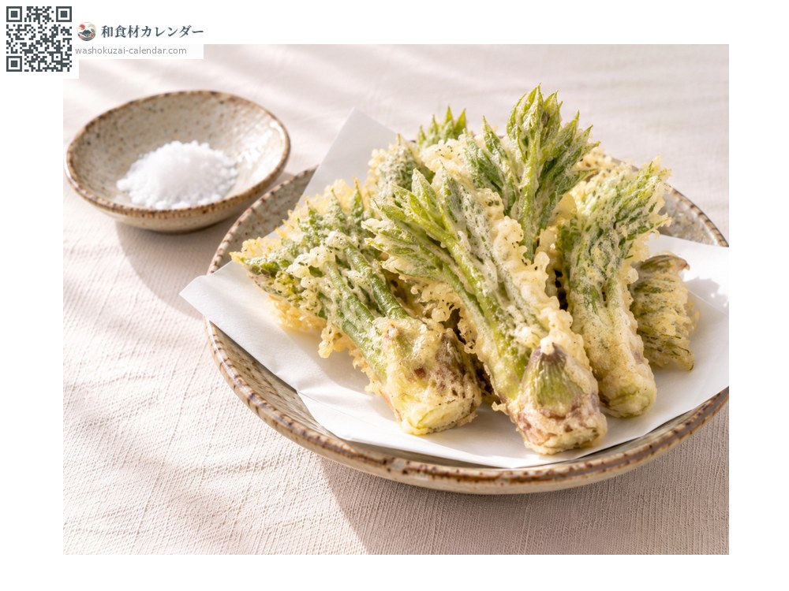
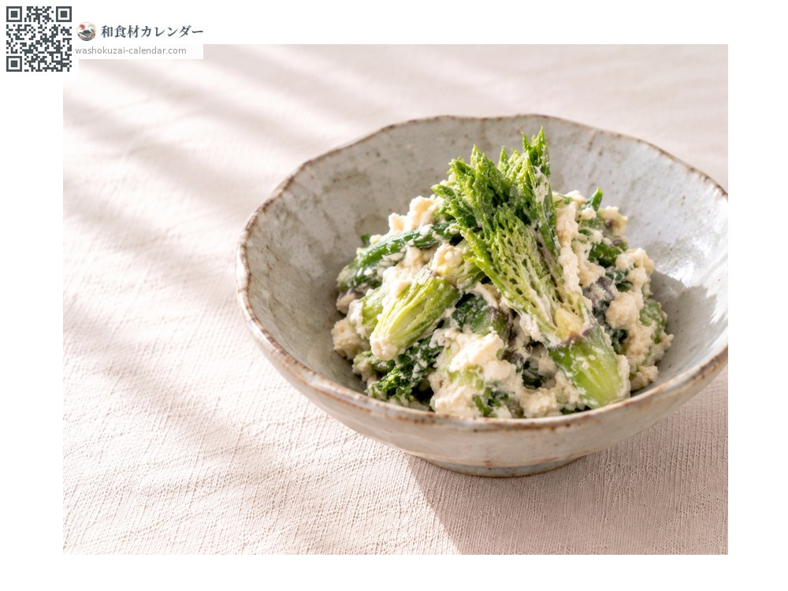
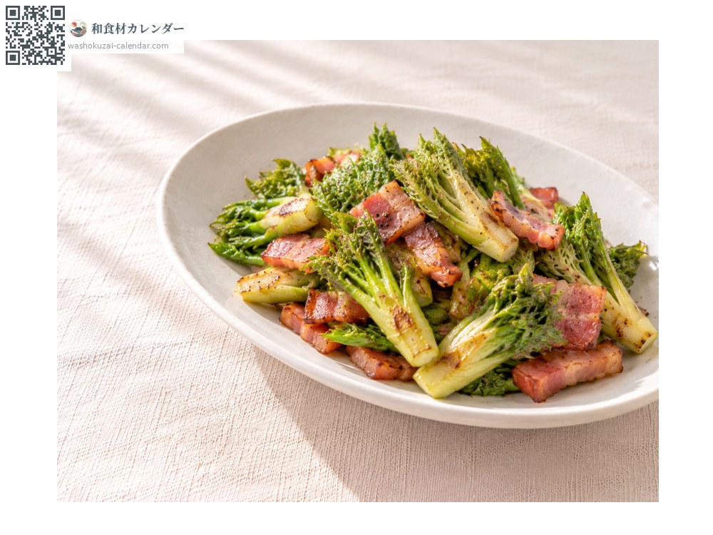
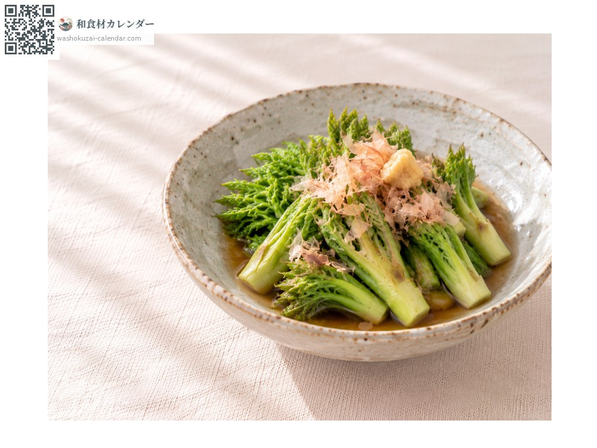

蔬菜
刺嫩芽（楤木芽）
タラの芽 たらのめ taranome
别名taranome
应季时期为3月、4月、5月

应季时期
1月
2月
3月
4月
5月
6月
7月
8月
9月
10月
11月
12月
应季有供应
烹饪方法

天妇罗
切掉较硬的根部，整颗油炸。

白和
焯熟后用豆腐泥拌匀。

培根炒
对半切开，与培根翻炒。

凉拌
稍微焯过，淋高汤酱油并放上木鱼花。
挑选方法
芽粗短饱满，叶子没有开得太大。
保存方法
用湿纸包好防止干燥，冷藏并尽早使用。
主要产地
小知识
五加科楤木的嫩芽，被称为「山菜之王」。口感软糯，略带苦味且风味浓郁。冬季到早春上市的是将剪下的枝条放在温室中催芽的促成栽培品，野生的则在4〜5月于山中采摘。